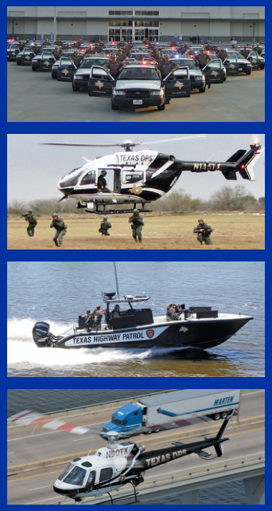

Are you interested in an exciting career with the DPS?
Top 10 Reasons to Join Texas DPS
- Competitive salaries and benefits
- Vacation and sick leave monthly accruals
- Overtime and stipend pay for education and second language
- Clothing allowance and state of the art equipment provided
- Opportunity for graduate and post graduate degrees
- State issued vehicles for Law Enforcement positions
- Wide range of specialties and promotion opportunities:
- State Trooper
- Texas Rangers
- Intelligence and Counter Terrorism
- Special Weapons And Tactics (SWAT)
- Explosive Ordinance Disposal (EOD)
- Tactical Marine Unit
- Dive Team
- Rotary and Fixed Wing Pilots
- K-9 and Motorcycle Unit
- Career stability within a legendary and highly elite organization
- State wide jurisdiction and opportunity to live and work anywhere in the State
- To Protect and Serve Texas

Driver License Division Careers
Be on the front lines in keeping Texas secure and providing excellent customer service to over 20 million Texas residents with the Texas Department of Public Safety.
For many career opportunities visit dps.texas.gov